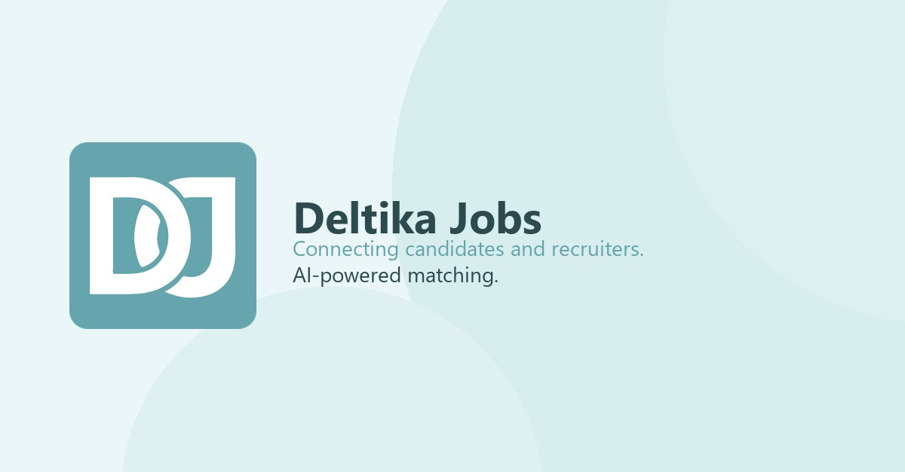

Candidates
Free accounts are open. Recruiter accounts are open too, so offers can start appearing. Have your CV and target positions ready.

Services
Deltika Jobs is live. Candidate accounts are free. Recruiter accounts are now open, so job offers can start appearing — roles in banking, fintech, insurance, IT, and consulting in every European Union country. Candidates can join from any country. Matching is AI-powered. You name the role you want next; recruiters are not left to guess it from an old CV. More industries will follow.

Free accounts are open. Recruiter accounts are open too, so offers can start appearing. Have your CV and target positions ready.
Recruiter accounts are open. Create an organisation for free, browse candidate target positions, and publish job offers.
Job offers in every European Union country, across banking, fintech, insurance, IT, and consulting. Candidates can join from any country. A target position is how someone moves into those fields — not a recruiter reading a new direction out of an old CV.
A free candidate account takes the profile, the CV, and the target. That is what new offers are matched against.
Who it is for
A student, a graduate, or anyone moving into banking, fintech, insurance, IT, or consulting sets a target position for the role they want next. Employers are not left to interpret a new direction from CV experience. Your last job is not your ambition.
An experienced professional can aim at a specific title, at the right level, in the industry they want. Employers see that target. They do not have to guess it from your work history.
You choose whether employers can find you, find you under an alias, or see you only after you apply.
Why set up your profile
Candidate accounts stay free. Recruiter accounts are open, so the first offers can start to appear. Your profile, CVs, and target positions are what those offers will be matched against.
If those are already in place, you are ready. If you still want to adjust a target or a CV, now is a good moment. With an open or anonymous profile, recruiters can find your target position.
Two ways to look for work
Publish a CV, browse roles, and apply. The employer reviews your application and decides on a MATCH. After a MATCH, you talk in the in-app messenger.
Add a target position. You see offers with AI-powered matching, ranked as a % match against that target, instead of filtering everything manually. With an open or anonymous profile, employers see that target in their search and can send you a role. You decide whether to accept.
A hidden profile stays out of employer search. Employers do not see your target positions. You reach them only by applying with your CV.
How visible you are
Your name and profile are in employer search. Useful when you want recruiters to find you quickly.
Employers can find your skills and your target. Your name and photo stay hidden until a mutual MATCH.
You are not in employer search. You choose the roles and apply yourself.
What a target position does
You can aim at a new path, or at a higher seat in the same field: a named title, seniority, industry, work mode, location, and pay range.
That target is what AI-powered matching uses to score a % match. It is also what recruiters search, when your profile is open or anonymous.
For recruiters
Creating an organisation is free. With a free account you can already browse candidate target positions. Recruitment, a match, and the conversation that follows all start once you publish a job offer. Candidates can join from any country; each of them can say which role they want next.
The Candidates tab shows people who have set a target position: the job title, seniority, and industry they want next. An open profile shows the name and photo. An anonymous profile shows the target and the skills, and keeps the name and photo hidden until both sides accept a match. You send a match proposal linked to one of your active offers. You see the % match once an offer of yours is active.
People who do not appear in the Candidates tab can still apply to your offer by sending a CV. That application is their yes. You accept or decline, and if you accept, it is a match.
After a match, chat opens on the platform. Deltika Jobs covers the search and that first contact. Screening, interviews, and the hiring decision happen outside the service.
Listing an offer
The listing price is €10 per day for each country the offer is listed in. You choose how long it stays up, from 10 days to 90.
The person who registers the organisation can invite other recruiters from the same organisation, using an email address on the company domain. They can publish offers, search candidates, and handle applications together. The offers stay with the organisation.
Candidate accounts are free. Recruiter organisations are free to create. Offers can start appearing.